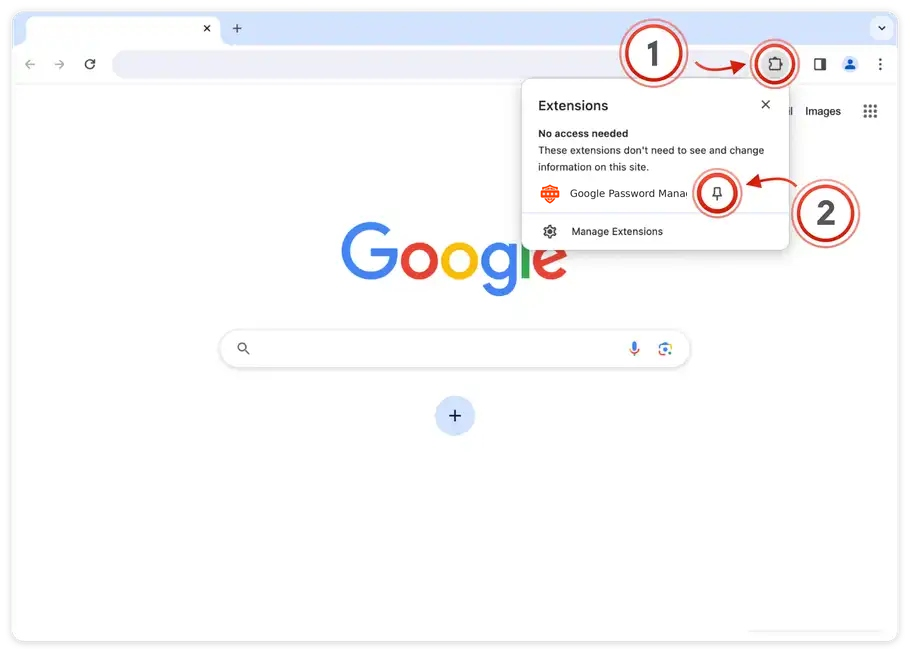
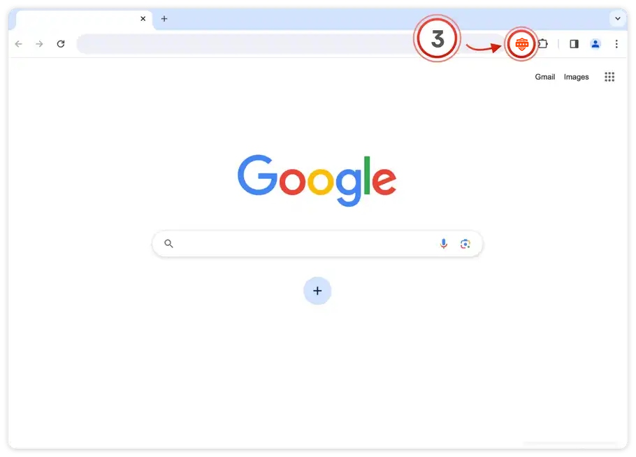
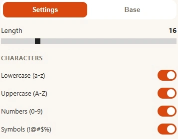
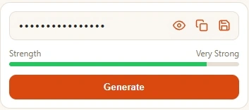
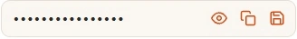

Click the puzzle piece (1) in the top right of your browser.
Then, click the little pin (2) next to the extension:

Click the puzzle piece (1) in the top right of your browser.
Then, click the little pin (2) next to the extension:

Open the extension (3) on any page to start using
Google Password Manager:

Already pinned? See how to use Google Password Manager →
Click the orange shield in your Chrome toolbar to get started.
Set the length and choose which characters to include.

Click Generate to create a new random password.

Click the copy icon, then paste the password into your sign-up form.

Use a different password for each account.
Can't find the extension? Show how to pin it →